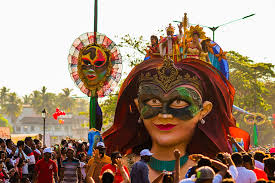

Ganesh Chaturthi
Maharashtra’s grand festival honoring Lord Ganesha, featuring large clay idols, processions, and community celebrations.

Navratri
Gujarat’s nine-day festival of dance, music, and devotion to Goddess Durga, famous for colorful Garba and Dandiya performances.

Diwali
The festival of lights celebrated across West India, marked by lamps, fireworks, sweets, and prayers for prosperity.

Makar Sankranti
A harvest festival in Maharashtra, Gujarat, and Rajasthan, celebrated with kite flying, tilgul sweets, and prayers to the Sun God.

Goa Carnival
A colorful festival in Goa with parades, floats, dances, and music, celebrating the pre-Lenten season.

Desert Festival
Rajasthan’s annual cultural festival in Jaisalmer, showcasing folk music, dance, camel races, and traditional arts.